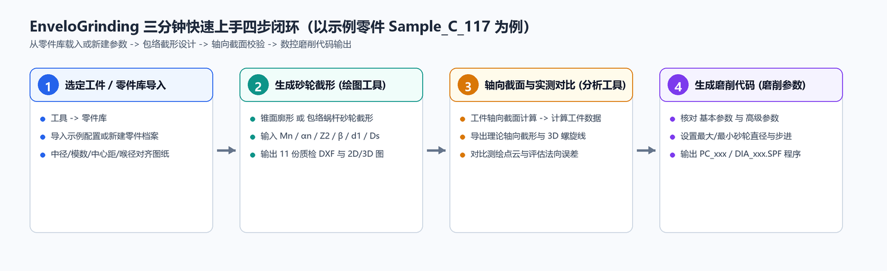

1.3 三分钟快速上手
本节使用脱敏真实零件 Sample_C_117（大压力角渐开线包络蜗杆），带您走通从载入零件 → 砂轮截形计算 → 理论轴向截面校验 → 批量生成 CNC 磨削代码的四步完整闭环。

第一步：从零件库载入或核对工件参数
- 启动软件，点击顶部菜单
工具零件库。 - 选中示例零件
Sample_C_117（配置详情显示116.921 / 38.5 / 60），点击右下角绿色导入按钮并确认。 - 导入后，全软件三大选项卡参数已自动就绪：
中心距：116.921mm蜗杆喉部直径：38.5mm蜗轮齿数：60法向模数 Mn/法向压力角 αn (°)/螺旋角 β (°)：3.25mm /23.5° /3.393°
第二步：生成砂轮截形（绘图工具）
路径 A：快速生成规则 锥面廓形
- 切换到
绘图工具锥面廓形。 - 核对参数：
中径宽4.78、中径齿顶高3.02、中径齿底高2.23、齿型右半角23.5、齿型左半角23.5。 - 在
保存文件指定输出路径（如D:\EG_Demo\Sample_C_117\conical_23.5.dxf），点击生成齿形文件。 - 软件同步生成
conical_23.5.dxf与同目录conical_23.5.html（可双击用浏览器查看交互齿形）。
路径 B：计算高精度 包络蜗杆砂轮截形
- 切换到
绘图工具包络蜗杆砂轮截形。 - 确认
齿轮齿面类型 = 渐开线齿轮、砂轮外径 Ds = 460.0mm、参与啮合齿数 = 7、修整延长齿高 = 5.0mm。 - 指定
保存文件（如D:\EG_Demo\Sample_C_117\wheel_23.5.dxf），点击生成截形。 - 稍候片刻即可获得主截形 DXF、2D/3D 交互 HTML 以及
_01~_11全套质检 DXF。
第三步：核对工件数据与轴向截面（分析工具）
- 切换到
分析工具工件轴向截面计算。 - 确认
中心距116.921、蜗杆喉部直径38.5、蜗轮齿数60、砂轮安装倾角3.393、砂轮直径460.0、砂轮分度圆齿顶高3.02、蜗杆计算齿数7。 - 点击绿色
计算工件数据按钮，核对理论传动比60.0、端面模数3.2557、标准导程角4.8336°等指标。 - 在
齿型文件地址选入上一步生成的conical_23.5.dxf，在保存文件指定axial_section.dxf，点击生成工件截面曲线，生成 2D 轴向截面图与 3D 喉部螺旋曲线图。
第四步：生成 CNC 数控磨削程序（磨削参数）
- 切换回
磨削参数基本参数。 - 核对
蜗杆类型 = 锥面、蜗杆旋向 = 右旋、磨削方向 = 从右往左、磨削总深度 = 1.0、磨削步进 = 0.1，并将砂轮直径范围设为最大砂轮直径 = 460.0、最小砂轮直径 = 450.0、砂轮直径间隔 = 2.0。 - 在
输出程序路径选择目标文件夹（如D:\EG_Demo\NC_Output），确认高级参数中的机床几何与对刀基准无误后，点击生成代码。 - 软件自动生成文件夹
PC_116_9210，内含DIA_450_0000.SPF~DIA_460_0000.SPF共 6 份加工程序，可直接拷贝至西门子数控磨床按实际砂轮直径调用！